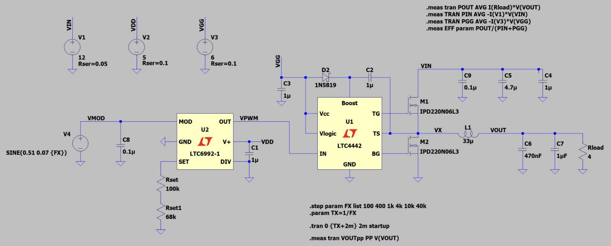
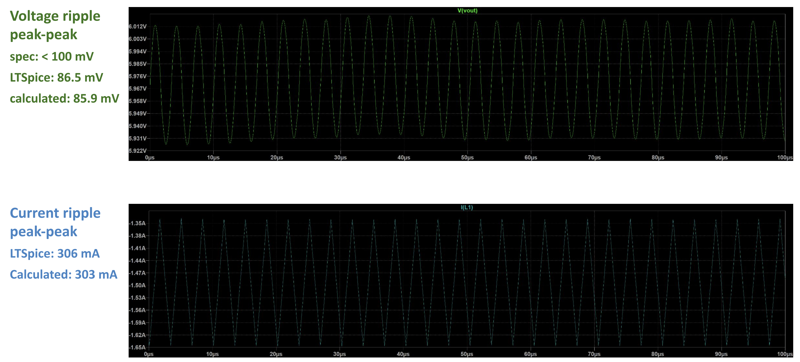
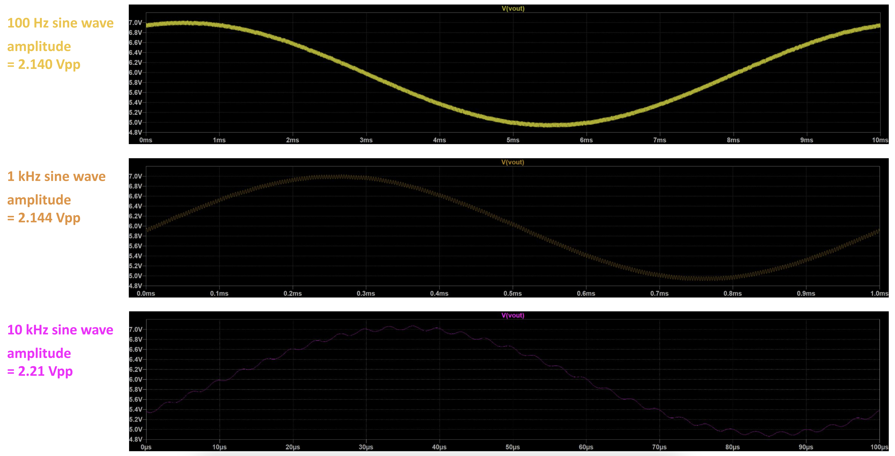
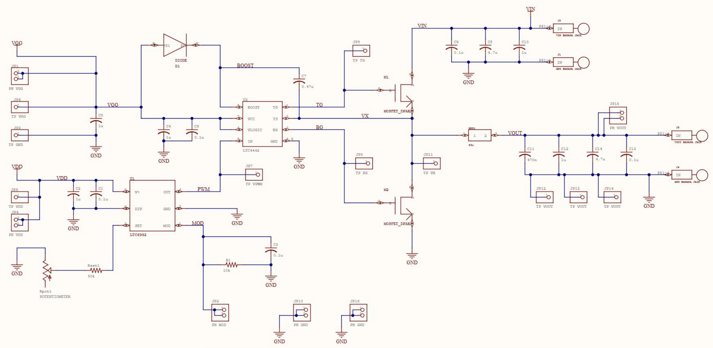
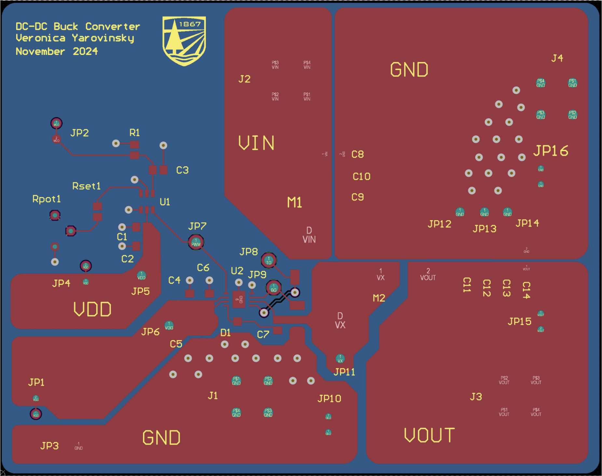
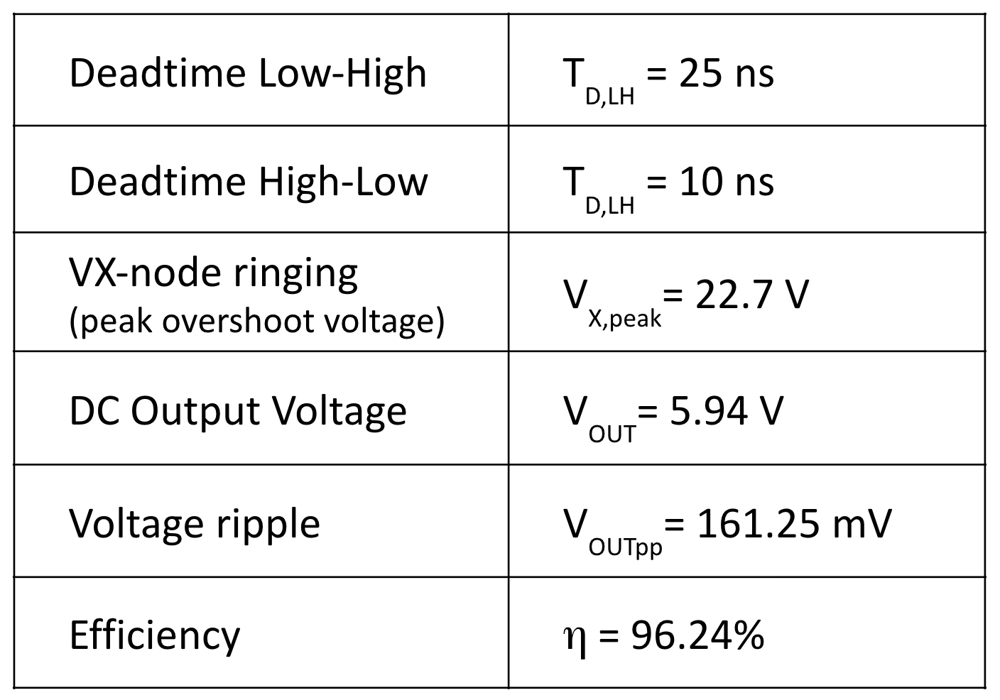
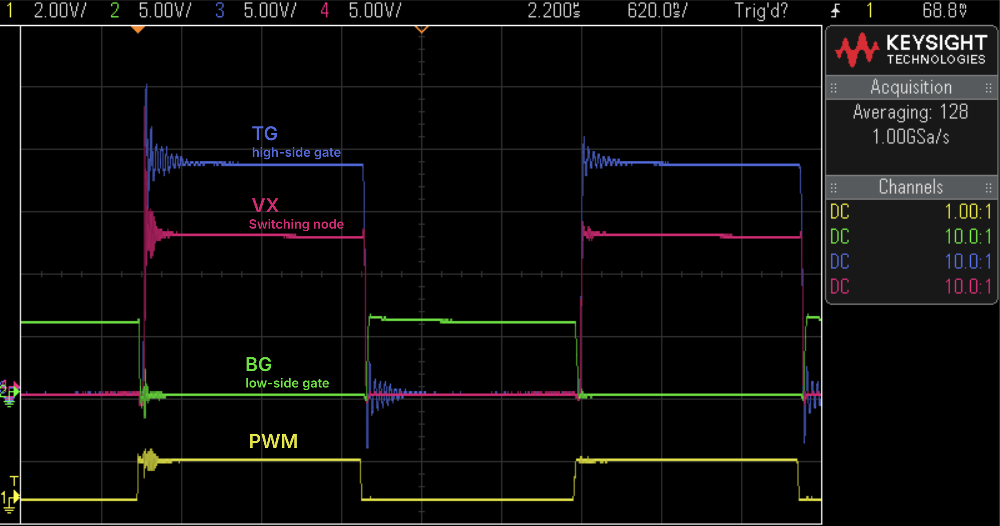
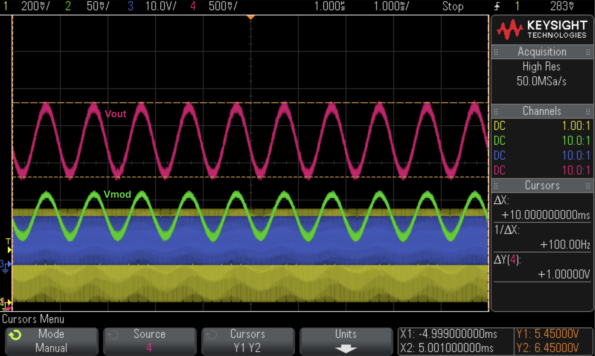
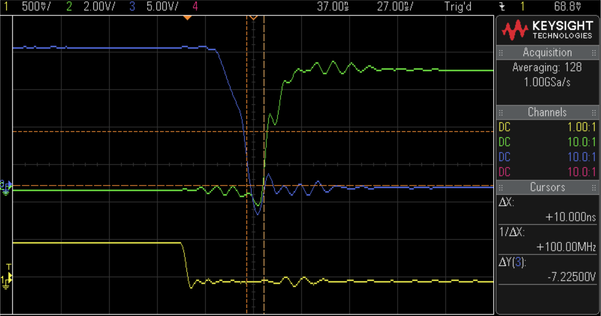

Class-D Audio Amplifier
The goal of this project was to design a powertrain for a Class-D audio amplifier circuit capable of driving a 20 kHz signal into a 4 Ω load from a 12 V supply.
I optimized the converter design for efficiency and tracking capability, simulated the circuit in LTSpice, completed the schematic and layout in Altium, then soldered and tested the board.
I completed this project in 3.5 weeks (including board turn time) as part of the course ENGS 125: Power Electronics and Electromechanical Energy Conversion. The design exceeded all specifications required.
LTSpice Simulations



Board schematics and layout, completed in Altium


Fabricated and Populated Board

Testing & Characterizing the Design



